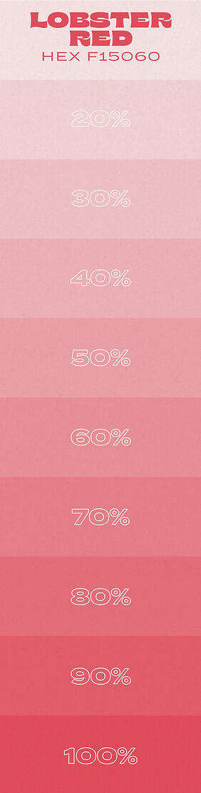
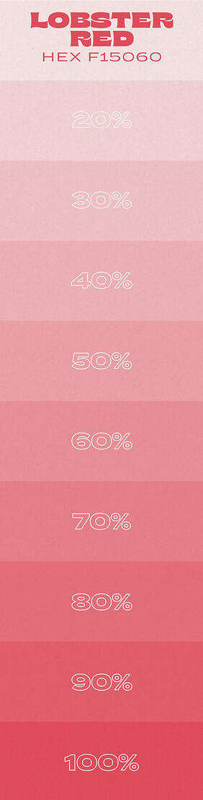
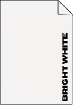
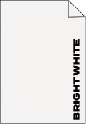
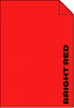
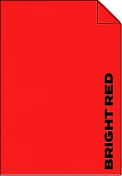

-
Dopple Design
-
Order Prints

-
Dopple shop
The Risograph is a stencil duplicator machine that works in a similar way to screen printing. It creates a stencil from banana paper, this is then wrapped around an ink drum and soy ink is pushed through the voids of the stencil. As the paper glides over the rotating drum it imprints your artwork onto its surface. The colours are then layered up to create your masterpiece!
Riso is the only environmentally friendly form of printing and when you work with Dopple you should know that's taken seriously. Dopple only stocks 100% recycled, unbleached paper and compostable packaging. Everything in the studio is reused and recycled at every opportunity! Hence all the Ink canister lamp.
TL:DR It's a cool eco-friendly screen printing machine
Risograph printing originated, in the 1980s, brought into the world by the RISO Kagaku Corporation (in Japanese, 'Riso' means 'ideal' and the word 'Kagaku' means 'science).
This amazing machine was initially created as speedy, low cost, high volume duplicator for churches, prisons and political campaigns. Its user base has shifted in the past decade as creatives have since repurposed the machine-harnessing its quirks and unusual colour pallet in order to make beautiful vibrant art prints. Using Riso in this new way has enabled artists to create stencil prints with an aesthetic akin to a screen print but at a much lower price.
Having been in the Riso biz for over half a decade there are some questions that tend to pop up over and over so hopefully, these are of help if you have more drop an email!
What's the maximum print Size? A3 (with a 3-5mm border)
What's the minimum quantity I can print? You can print as little as one but just like a screenprint the more you run from your set up the better the unit price becomes.
What are prices based on? Prices are based on the no. of colour stencils, dimension, quantity and stock.
What do I need to send Dopple to create my riso print? check out the 'prepping your artwork' section here!
What's the best thing to print? Dopple will advise and help you to achieve a great outcome no matter your artwork but the most economical pieces use few colours in higher quantities.
Dopple Press is a Brighton, UK based Risography studio, dedicated to creating the highest quality print and design. Since starting up in 2015 Dopple Press has had the pleasure of working with hundreds of fantastic creatives, companies, institutions, startups, students and more.
The name Dopple originates from the word 'Doppelganger', meaning to look the same but not identical. In its nature, this is exactly what you can expect from the Riso process. Each print will come with its own individual quirks thanks to the Riso process, making every print unique.
Risograph is Dopple's bread and butter and with over 15 years in design and publishing, Dopple can support any project from start to finish.

SOY INKS
The risograph has its own special colour pallet. Dopple has 12 colours ranging from rich deep tones to vibrant fluorescents. Not only are there these pure spot colours but the soy-based ink allows for colours to be overlayed in order to create new ones. This means you can create a three-colour print with only two colours for example- you can even print CMYK photos! Click on the little ink drums to see the swatches:
 


images/soyinkts/black-swatch.jpg
PREPPING YOUR PRINT
PAPER
☺ You can print any size up to A3 with an unprinted 5mm border.
☺ Paper stocks must be uncoated & below 300gsm. Heavier stocks are more ££ & result in misalignment & mixed coverage.
☺ Dopple offers beautiful, tried & tested in-house stocks, that are perfectly suited to the riso process. All are unbleached & 100% recycled.
☺ Want your own stock or a specificflavor you want ordering? A-OK! Just email your request here.
Stocks in stock:
 

 


ARTWORK
Dopple offerfree artwork setup!
Scared off Riso because you're not sure about the artwork setup? With eight years of experience in Risography Dopple has your back in achieving the best print possible.
What Dopple Needs:
➻ a 300dpi full-colour PDF of your artwork at the correct size, exactly as you would ideally like it to look.
➻ Leave a 5mm border clear around the edge of your artwork.
➻ Bear in mind that Riso has a specific colour pallet so if you don't use those tones and colours when creating your piece expect the print outcome colours to be a bit different
➻ Super helpful to include your packaged Adobe files (for any tweaks that may need doing)
Already a Riso Whizz?
Dopple will happily accept your colour-separated layers as high res greyscale PDFS along with a full-colour proof.
You could even try a workshop if you are keen to learn!
Already a Riso Whizz?
Dopple will happily accept your colour-separated layers as high res greyscale PDFS along with a full-colour proof.
You could even try a workshop if you are keen to learn!
TOP TIPS
✸ Increase line-up accuracy: Include an extra stroke around layers, to maximise alignment.
✸ Improve the finish: Avoid dense areas of Ink coverage! Too inky = roller marks, needle drag, and ink transfer.
✸ Printing photos / 4+ Colours: Dopple can separate your artwork into CMYK. Overlaying these four colours will create more- even full-colour photos!
✸. Halftone: You can choose how you'd like each layer printed. Either as 'Smooth' (emulating your design as closely as possible). Or as a 'Halftone' printed in large or small dots using the machine.
✸ Type Clarity: If you typeset in Photoshop you can expect your text to rasterize & look blurry. Zoom in to check the overall clarity of your artwork.
✸ Gradients: Use the middle section of gradients, the ends of the spectrum will result in adigitize line pattern.
Click the paper clip to request some assistance!